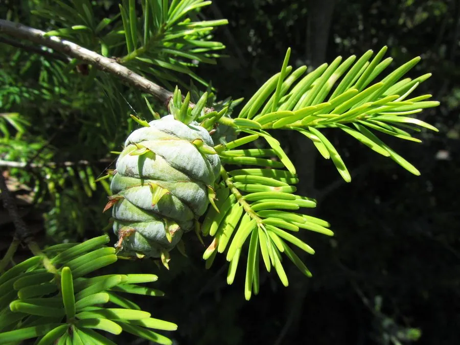

蕨类与裸子植物 · 植物界
黄杉 Pseudotsuga sinensis

黄杉是我国特有的珍稀针叶树，球果的苞鳞显著外露、三裂如舌，木材优良，属国家二级重点保护植物。
- 分类
- 门裸子植物门纲松纲目松柏目科松科属黄杉属
- 栖息环境
- 海拔 800–2800 m 的山地沟谷与山坡，喜温暖湿润多云雾气候
- 地理分布
- 中国云南、四川、贵州、湖北、湖南、陕西、福建等地
- 保护级别
- IUCN 暂无评估；中国国家二级重点保护野生植物
物种志
黄杉是松科黄杉属常绿乔木，高可达 50 m，胸径可达 1 m，树干通直，树皮灰褐色、纵裂。叶片条形，扁平，长 1.5–3 cm，螺旋状排列成两列，表面深绿色，叶背有两条白色或灰绿色气孔带。雌雄同株，球果卵状圆锥形，长 5–10 cm，成熟时褐色，最显著的特征是种鳞之间伸出的三裂状苞鳞，像小舌头一样外露。
黄杉是中国特有的珍稀树种，分布于云南、四川、贵州、湖北、湖南、陕西、福建等地的山地，多生于海拔 800–2800 m 的沟谷与山坡，喜温暖湿润、云雾较多的气候和排水良好的酸性土壤。它生长较慢，但木材纹理直、材质坚韧，是优良的建筑与家具用材。由于分布区狭窄、野生种群数量少，加上历史上采伐，黄杉被列为中国国家二级重点保护野生植物。
形态与习性
- 树高可达 50 m
- 叶条形扁平，排成两列
- 球果苞鳞三裂外露，像小舌头
- 木材纹理直、材质坚韧
- 习性生长较慢，喜湿润多雾
- 保护国家二级重点保护野生植物
趣味知识
- 黄杉球果上的苞鳞伸出种鳞之外，三裂像小舌头，是辨认它的关键。
- 黄杉木材坚韧、纹理直，是优良的建筑和家具用材。
- 黄杉是中国特有的珍稀针叶树，被列为国家二级保护植物。